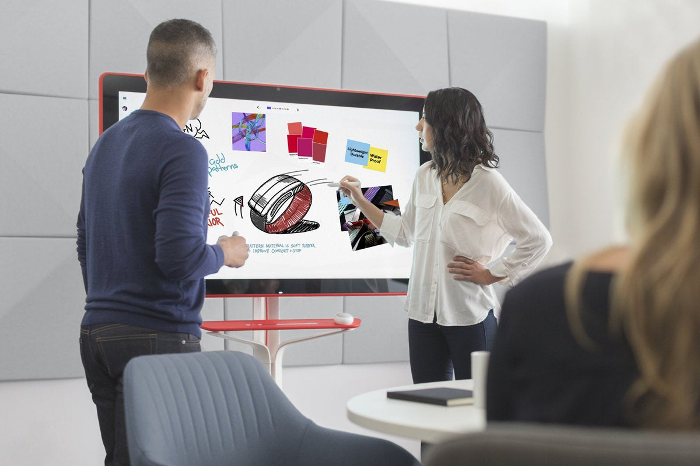

Company History
The MetalsBridge concept took form in 2000 when its creators engaged KPMG Fides in Zurich, Switzerland to co-develop "KeyCommoditied", a single cloud-based platform that would allow clients to contract, administer, execute and manage complex metals, processing and logistics transactions
In 2001, KeyCommodities was successfully deployed at MAN Ferrostaal, Inc. in the United States, which resulted in significant, measurable operational improvements across the enterprise: 71% overall savings (9.96 man-years) including a 65% savings (7.90 man-years) in commercial order administration, 90% savings (2.09 man-years) in system administration, and 100%savings (0.78 man-years) in non-system administration,
In 2006, the MetalsBridge project was redomiciled to the United States as MetalsBridge, LLC with corporate headquarters in Cleveland, Ohio.
In 2018, MetalsBridge, LLC formed Bridge Trade, a 50-50 joint venture with Nippon Steel Trading Americas, Inc. (f.k.a. Nippon Steel & Sumikin Bussan Americas, Inc.).